Abstract
Robot manipulation policies conventionally rely on tens to hundreds of teleoperated or kinesthetically guided demonstrations, a manual burden that must be repeated for each new task, environment, and robot embodiment. Recent methods mitigate this by learning robot-agnostic, object-centric policies from human demonstration videos, yet collecting such videos still requires manual effort and captures a limited distribution of object configurations. We argue that video generative models can serve as a scalable replacement for human data collection, autonomously synthesizing diverse demonstrations across object placements at zero human cost. We introduce PROXY, a method that learns a task-specific policy from a single RGB-D image and a natural-language task description without any real-world data collection. PROXY autonomously reconstructs task-relevant object meshes, diversifies scene configurations, synthesizes demonstration videos via a video generative model, and filters implausible video samples through a multi-axis VLM-based verification stage, yielding training data for an object-centric diffusion policy over the relative pose trajectory between a held object and a fixture object. On four real-robot tasks across two embodiments, PROXY matches policies trained on an equivalent number of human demonstrations and outperforms a strong visuomotor baseline trained on real teleoperation data. Critically, broadening the scene-diversification range incurs no additional human cost yet yields out-of-distribution generalization that real-data baselines fail to achieve.
How PROXY works
Here’s the whole pipeline in one figure. Step through it, or skip to the details underneath.
![Pipeline diagram. Inputs: an RGB image and a depth map of a mug and a coffee machine, with the prompt “Place the mug under the coffee machine”. Automated demonstration collection: (1) reconstructed meshes of the mug and machine, (2) a stack of diverse synthetic renders, (3) generated video frames of the mug lifted by thin wires under the machine, (4) depth maps of those frames, (5) tracked pose axes on both objects, (6) a VLM prompt whose first step, OBSERVE, asks it to examine the frame for duplication of the held object. Policy: relative pose trajectories of the mug drawn as coloured axes, labelled object pose trajectory diffusion policy. Bottom: closed-loop execution, where the policy maps the current object pose to a predicted goal pose and the robot action is retargeted, and an embodiment-agnostic rollout of the same task on a Franka Panda and a UR5.](img/system-1200.webp)
Step 1 of 9
Arrow keys on the figure also move between steps.-
Inputs
PROXY gets one RGB-D image of the scene from a fixed camera and one sentence describing the task, here “Place the mug under the coffee machine.” That is all the real-world data it uses: no teleoperation and no human videos.
-
1 Object meshes
Gemini 2.5 Flash reads the image and the sentence and names the two objects that matter: the held object, here the mug, and the fixture, the coffee machine. GroundedSAM segments both, SAM3D reconstructs a 3D mesh of each from the single image, and FoundationPose fits each mesh to the metric depth to get its starting pose.
-
2 Diverse scenes
The two meshes go into a PyBullet scene with a planar table and a camera matched to the real one. Each object is moved by up to 0.05 m on the table and rotated by up to 20° about the z-axis, with collision checks, giving 25 physically plausible starting scenes. Blender renders each one as a conditioning image for the video model.
-
3 Video synthesis
Wan 2.2 generates candidate videos of the task from the rendered scenes and a detailed prompt that Gemini 2.5 Flash writes from the task sentence and the image. The prompt describes the object as moved by thin suspended wires, so the motion has a visible cause and no hand or gripper hides the object. Videos are generated at 480p and 16 fps, then interpolated to 32 fps with RIFE.
-
6 VLM filtering
GPT-5 scores every generated video on three axes, one for each common failure: the task is not completed, an object is duplicated or hallucinated, or the camera or the fixture drifts. Videos below the acceptance threshold are dropped. The figure numbers this step 6, but it runs right after video synthesis, so only accepted videos go on to depth and pose.
-
4 Depth
Video Depth Anything estimates relative depth for every frame. A scale and a shift, fit in disparity space against the known depth of the two objects in the rendered scene, turn it into metric depth for the whole video.
-
5 Pose tracking
FoundationPose tracks both objects through each accepted video, using the metric depth, the object masks and the meshes. A video is rejected if either object’s starting rotation is more than 30° from the Karcher mean of all starting rotations, which catches axis-flipped estimates. The pose of the held object relative to the fixture over time is one demonstration, and the 12 highest-scoring videos per task are kept.
-
Policy
SPOT’s SE(3) diffusion policy is trained on the 12 generated demonstrations. Given the current pose of the held object relative to the fixture, it predicts the next four relative poses. An end-state classifier, trained alongside it, predicts when the task is complete.
-
Closed-loop execution on the robot
Contact-GraspNet proposes grasps on the held object, and grasps that would collide with the scene or fail inverse kinematics anywhere along the predicted trajectory are discarded. After the grasp, FoundationPose re-estimates both object poses at every step, the policy predicts the next poses, and only the first one is executed, mapped to the gripper through inverse kinematics. When the end-state classifier signals completion, the robot lets go and retracts. The figure shows the same task on the Franka Panda and the UR5.
In more detail
Problem. PROXY trains a manipulation policy π from a single RGB-D image Ireal of a tabletop scene and a short task description ℓ, using only generated demonstrations. Each task involves two objects: a held object oh, which the robot grasps and moves, and a fixture of, which stays where it is. The policy works with the pose of the held object in the fixture’s frame:
Here Th,t and Tf,t ∈ SE(3) are the poses of the two objects at frame t. Written in the fixture’s frame, the trajectory τ does not depend on where the pair sits in the scene, only on how the held object moves relative to the fixture.
Object meshes. Gemini 2.5 Flash identifies the two objects from Ireal and ℓ, GroundedSAM segments them, and SAM3D reconstructs a mesh of each. FoundationPose then aligns each mesh with the metric depth map to get the object’s initial pose in the camera frame. The meshes are used twice: to render new scenes and, later, to track the objects in the generated videos.
Scene diversification. A PyBullet simulation with a planar table holds the two meshes at their estimated poses, with the camera extrinsics matched to Ireal. Each object gets collision-checked planar translations of up to 0.05 m and rotations of up to 20° about the z-axis, which gives 25 physically plausible starting scenes. Blender renders them as conditioning images for the video model. That is more scenes than the policy needs, so that enough demonstrations survive filtering.
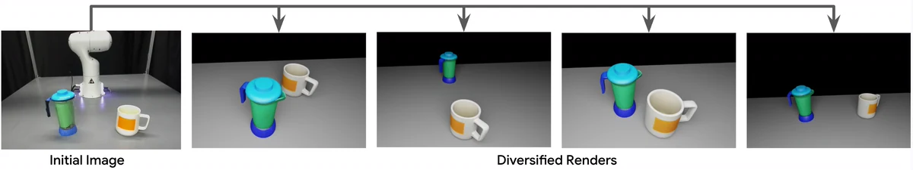
Video generation. Wan 2.2, an open-source video generation model conditioned on an image and text, generates candidate videos from the 25 rendered scenes at 480p and 16 fps; 720p takes about four times longer and does not improve task adherence. Gemini 2.5 Flash expands ℓ and Ireal into a detailed prompt, reused for every demonstration of a task. A rendered scene has no robot or person in it, so asking the model to move an object asks for motion with no cause, and the videos tend to show objects teleporting or floating. A human hand would provide the cause but would occlude the object and corrupt the depth estimate. The prompt instead describes the object as puppeteered by thin suspended wires, which gives clean object-only motion with the object in full view. RIFE then interpolates each video to 32 fps for reliable pose tracking.
VLM filtering. Generated videos go wrong in three typical ways: the held object does not reach the goal configuration, an object is duplicated or hallucinated, or the camera or the fixture drifts. GPT-5 scores each candidate video along these three axes, with the same prompt for every task and only the task description filled in. Videos that do not meet the acceptance threshold are discarded.
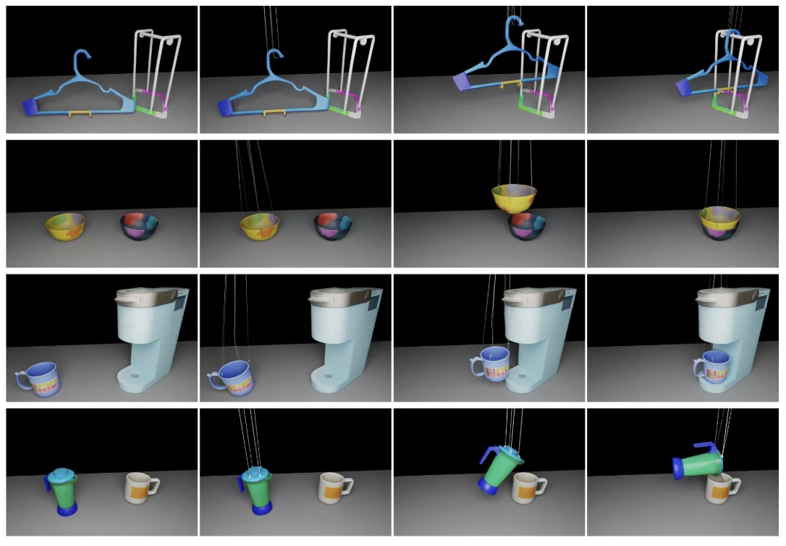
Depth and pose. FoundationPose needs metric depth for every frame. Video Depth Anything can predict metric depth directly, but its output deviates significantly from the true depth of the conditioning frame, so PROXY uses its more robust relative mode and calibrates it. It solves for a scale s and a shift b in disparity space by least squares, using the metric depth of the two objects in the conditioning image I0(j), masked to the object regions:
The fitted transform is applied to the whole video. FoundationPose then tracks both objects, given the metric-aligned depth, the object masks, the meshes and the camera intrinsics. It occasionally returns an axis-flipped initial pose, so PROXY computes the Karcher mean R of the frame-0 rotations across the retained videos and rejects any video in which either object’s initial rotation is more than 30° from R. Each remaining video gives a relative pose trajectory τ(j), and the 12 highest-scoring videos per task become the training demonstrations.
Policy. PROXY trains SPOT’s SE(3) pose-trajectory diffusion policy on the 12 generated demonstrations. The policy takes the current relative pose Ttrel and predicts the future trajectory with SE(3)-equivariant diffusion, over a horizon of four poses. Training uses DDIM with 100 denoising steps (10 at inference), a batch size of 128 and 3000 epochs. As in SPOT, an end-state classifier is trained to predict task completion from the current relative pose.
Grasping. Grasps are not learned, so the initial grasp has to work for the whole motion. Contact-GraspNet proposes grasps on the held object. PROXY forward-simulates the policy in open loop from the current state to predict the held object’s poses, and computes the matching end-effector trajectory for each grasp. A grasp is rejected if the gripper mesh collides with the scene at any predicted step, or if inverse kinematics finds no valid joint configuration somewhere along the trajectory because of joint limits or singularities. Of the grasps that remain, the one with the highest Contact-GraspNet confidence is executed.
Closed-loop execution. After the grasp, FoundationPose tracks both objects continuously. At each step the policy predicts four future poses in the fixture frame and only the first is executed: PROXY computes the relative SE(3) transform from the current pose and maps it to the end effector through inverse kinematics, preferring the joint configuration closest to the current one. Re-planning at every step corrects accumulated errors and unexpected object motion. When the end-state classifier signals that the task is complete, the robot releases the object and returns to its home position.
Models and tools: Gemini 2.5 Flash, GroundedSAM, SAM3D and FoundationPose for the meshes; PyBullet and Blender for the scenes; Wan 2.2 and RIFE for the videos; GPT-5 for filtering; Video Depth Anything and FoundationPose for depth and pose; SPOT’s diffusion policy; Contact-GraspNet for grasps.
Tasks
Four tabletop tasks, each with a held object and a fixture. The sentence for each task is the only task description PROXY gets.

Pour “Pour water into the mug”
Results
We compare PROXY with two baselines trained on real data, on all four tasks and both robots.
Setup
Two robots: a Franka Panda with a fin-ray gripper, and a UR5 with a Robotiq 2F-85 parallel-jaw gripper. A fixed ZED 2i stereo camera captures the scene for all methods; for PROXY it provides the one RGB-D image used to generate data, and for SPOT it records the human demonstration videos. Every method gets 10 trials per task on each robot, with objects placed within the same range seen during training (the initial distribution, D0). A trial counts as a success when the held object reaches the goal configuration relative to the fixture.
Baselines
SPOT is an object-centric policy that, like PROXY, takes the current relative SE(3) pose between the held object and the fixture and predicts a trajectory of relative SE(3) poses. It is trained on 12 human-hand demonstrations per task, recorded on video under the same scene perturbation range PROXY uses.
Diffusion Policy (DP) is an image-based visuomotor policy. It maps RGB images from the fixed scene camera and a wrist-mounted RealSense D435i, together with the end-effector pose, to a sequence of end-effector actions. It is trained on 30 teleoperated demonstrations per robot per task.
Both baselines use their official implementations. PROXY uses no real demonstrations: its 12 training demonstrations per task are generated from the single RGB-D image.
Success rates
-
PROXY
- Franka Panda
- 0.875
- UR5
- 0.875
0 real demonstrations
-
SPOT
- Franka Panda
- 0.825
- UR5
- 0.725
12 human-hand demonstrations per task
-
Diffusion Policy
- Franka Panda
- 0.175
- UR5
- 0.425
30 teleoperated demonstrations per robot per task
Mean success rate over the four tasks at D0 · 10 trials per method, task and robot
| Franka Panda | UR5 | |||||||||
|---|---|---|---|---|---|---|---|---|---|---|
| Method | Pour | Stack | Hook | Place | Mean | Pour | Stack | Hook | Place | Mean |
| Diffusion Policy | 0.2 | 0.4 | 0 | 0.1 | 0.175 | 0.4 | 0.3 | 0.5 | 0.5 | 0.425 |
| SPOT | 0.8 | 0.9 | 0.7 | 0.9 | 0.825 | 0.7 | 0.7 | 0.7 | 0.8 | 0.725 |
| PROXY | 1.0 | 1.0 | 0.6 | 0.9 | 0.875 | 0.7 | 1.0 | 0.8 | 1.0 | 0.875 |
PROXY has the highest mean success on both robots and matches or beats SPOT on 7 of the 8 task–robot pairs; the exception is Hook on the Panda (0.6 vs 0.7). Diffusion Policy is below both object-centric methods on every pair.
What goes wrong
We record three kinds of failure: grasp failures, where the robot does not acquire the held object; manipulation failures, where it collides with the scene during execution; and goal failures, where the policy does not reach the desired end configuration.
Hook and Pour demand the most precise alignment: the hanger has to be guided onto the rack, and the pitcher’s spout has to point downward. Stack and Place are more forgiving. PROXY’s two lowest scores are on the two precise tasks: Hook on the Panda (0.6) and Pour on the UR5 (0.7). Diffusion Policy’s lower success reflects its need to learn grasping from scratch along with the task, made worse by its sensitivity to initial conditions. It does markedly better on the UR5 than on the Panda (mean 0.425 vs 0.175), because the stiffer UR5 gripper holds objects more stably than the compliant Panda gripper. The gap between PROXY and SPOT comes largely from demonstration quality: in SPOT’s human-hand videos the hand occludes the object and degrades pose tracking during training, while the generated videos contain no occlusion and give cleaner pose trajectories.
Side by side
Pick a robot and a task to watch one trial of each method.
Franka Panda · Pour
Trial 2 of 10 for every method, picked by number, not by outcome. Each method was reset separately, so the starting layouts differ between methods. Diffusion Policy clips are shown at 4× speed and PROXY and SPOT as recorded, so clip lengths are not comparable. The Franka Panda Pour clip for PROXY ends when its policy stops; the carry-back that follows, in which the robot drops the pitcher on its side, is cut. Some Diffusion Policy recordings also contain short bursts of torn frames from the original capture (most visible in Franka Panda Stack, Place and Pour).
Wider starting distribution
So far every method started from D0, the range of object placements it was trained on. Here we spread the objects out.
The wider distribution, D1, places the objects over a larger area of the table with a wider range of rotations. Since PROXY’s scenes are synthetic, covering D1 only means generating training data over a wider range. PROXY+ is PROXY trained on 24 generated demonstrations sampled from ±0.25 m in x, ±0.15 m in y and ±60° in rotation, at no additional human cost. These experiments use the Franka Panda, on Pour and Place.
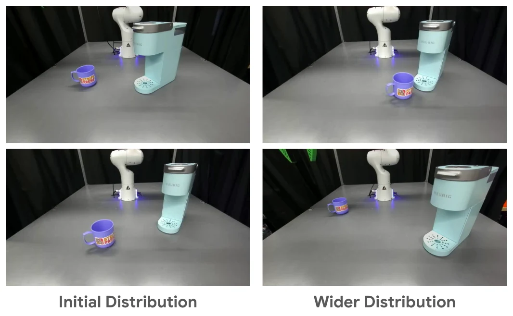
| Pour | Place | ||||
|---|---|---|---|---|---|
| Method | Demonstrations | D0 | D1 | D0 | D1 |
| Diffusion Policy | 30 teleoperated | 0.2 | 0 | 0.1 | 0 |
| SPOT | 12 human | 0.8 | 0.4 | 0.9 | 0.3 |
| PROXY | 12 generated | 1.0 | 0.5 | 0.9 | 0.3 |
| PROXY+ | 24 generated | 0.9 | 0.7 | 0.9 | 0.9 |
At D1, SPOT and PROXY both drop sharply. On Pour, SPOT falls from 0.8 to 0.4 and PROXY from 1.0 to 0.5, about half; on Place, both fall from 0.9 to 0.3, a third of their D0 rate. Diffusion Policy fails every D1 trial. PROXY+ gets 0.7 on Pour and 0.9 on Place at D1, just from generating its demonstrations over the wider range, with no extra human effort, and scores 0.9 at D0 on both tasks (PROXY: 1.0 on Pour, 0.9 on Place). SPOT and Diffusion Policy could only adapt by collecting new human or teleoperated demonstrations.
More rollouts
Sixteen more PROXY runs, two per task on each robot. Pick one to watch it.
These are trials 6 and 7 of each task, picked by number, not by outcome. Most run to the end of the recording; the two Franka Panda Pour clips stop after the pour, before the robot carries the pitcher back and drops it on its side, and UR5 Hook trial 7 stops about a second early, before a bystander walks into view. Two UR5 tiles use a later trial instead of trial 7 (Pour: trial 10, Place: trial 8), because a bystander’s face is visible in the skipped trials.
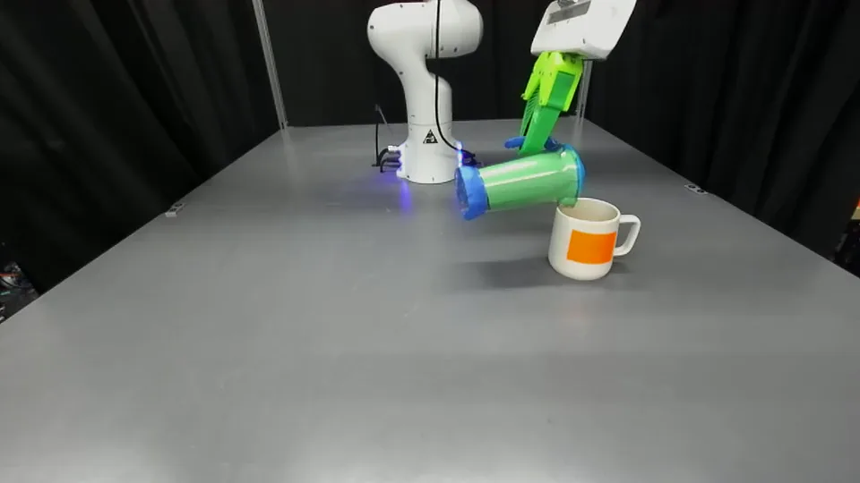
Franka Panda · Pour trial 6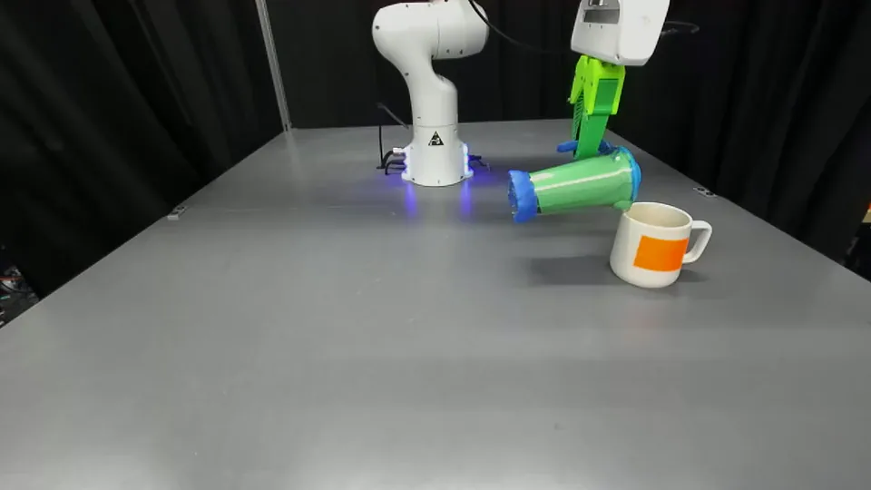
Franka Panda · Pour trial 7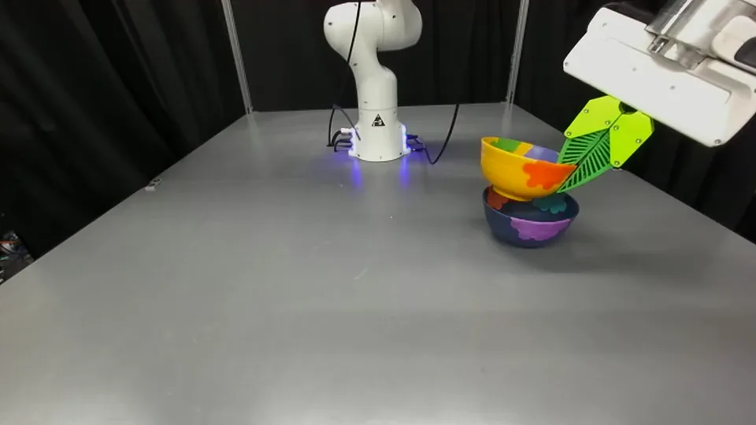
Franka Panda · Stack trial 6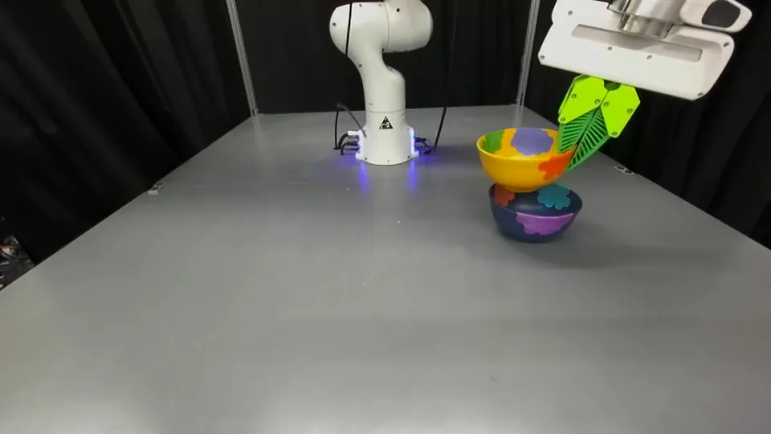
Franka Panda · Stack trial 7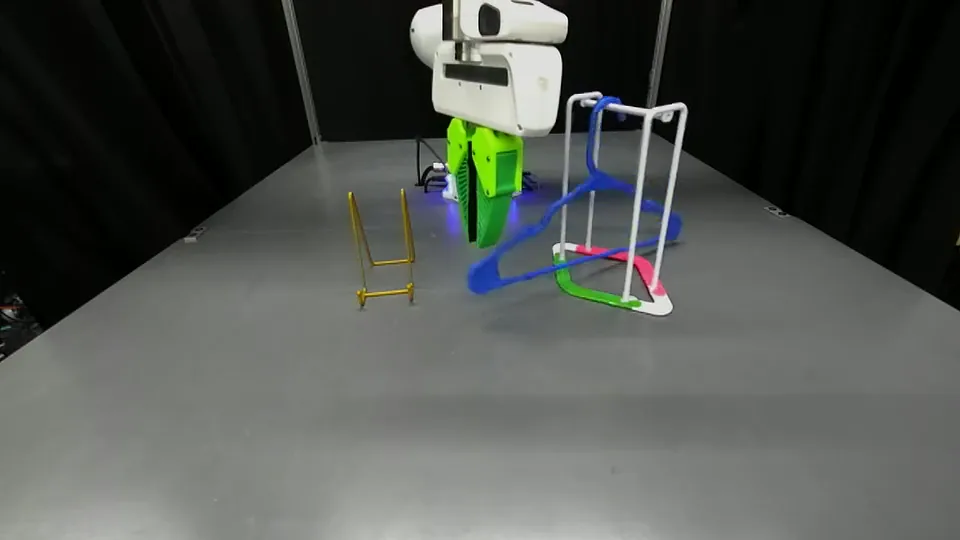
Franka Panda · Hook trial 6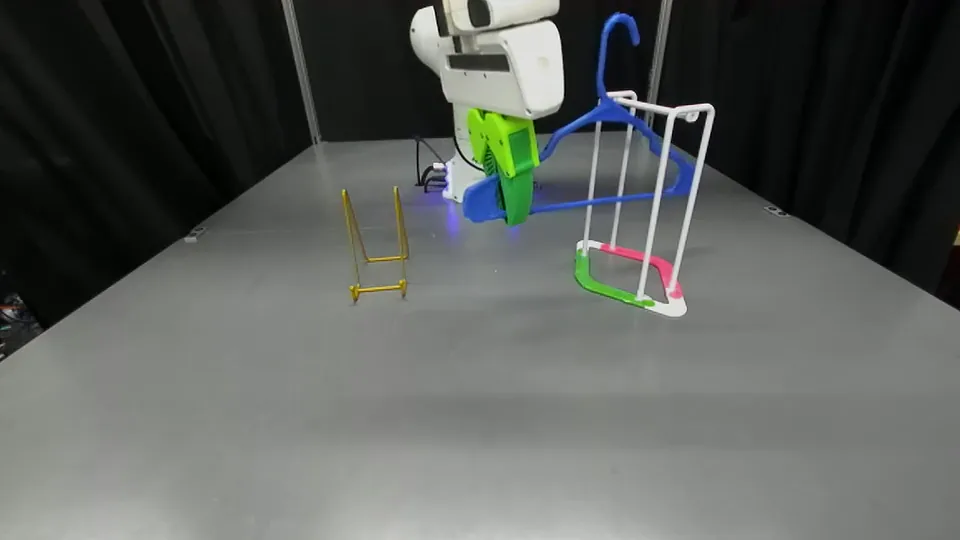
Franka Panda · Hook trial 7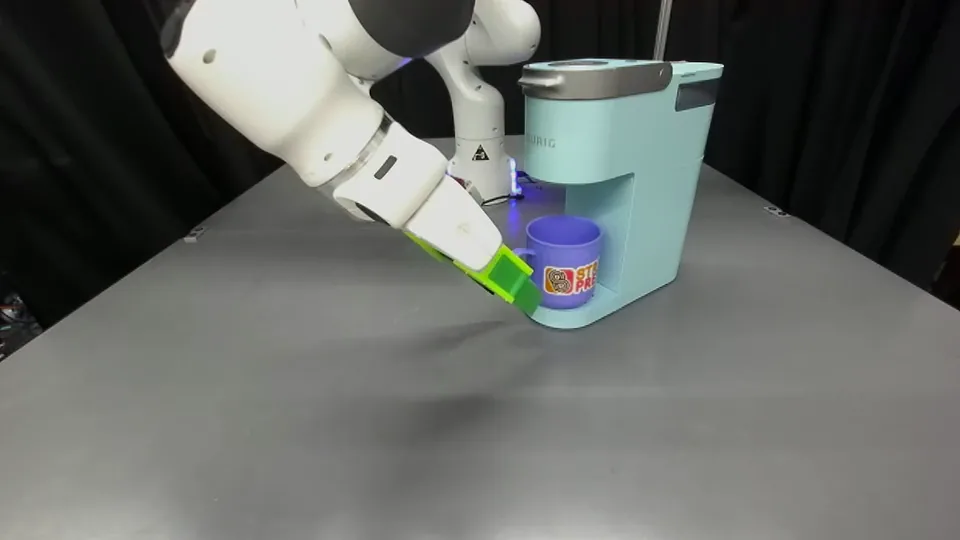
Franka Panda · Place trial 6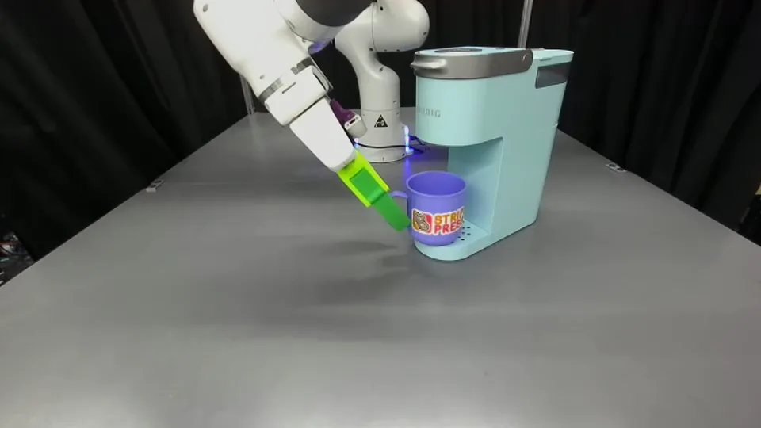
Franka Panda · Place trial 7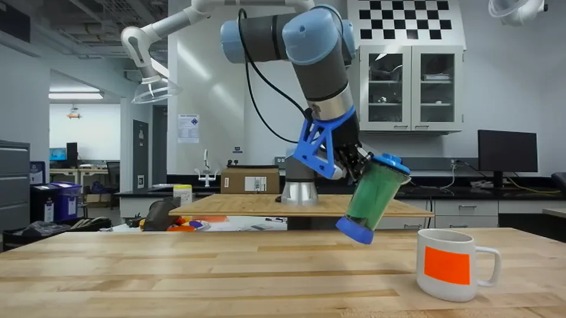
UR5 · Pour trial 6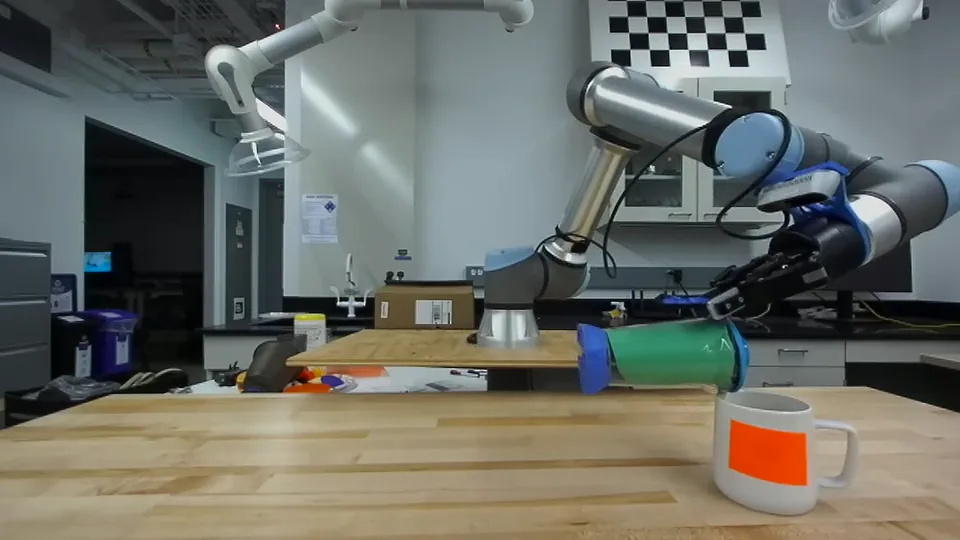
UR5 · Pour trial 10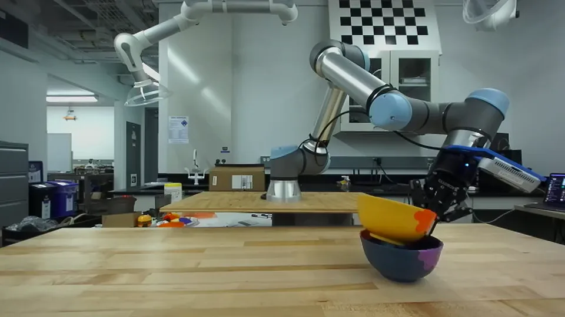
UR5 · Stack trial 6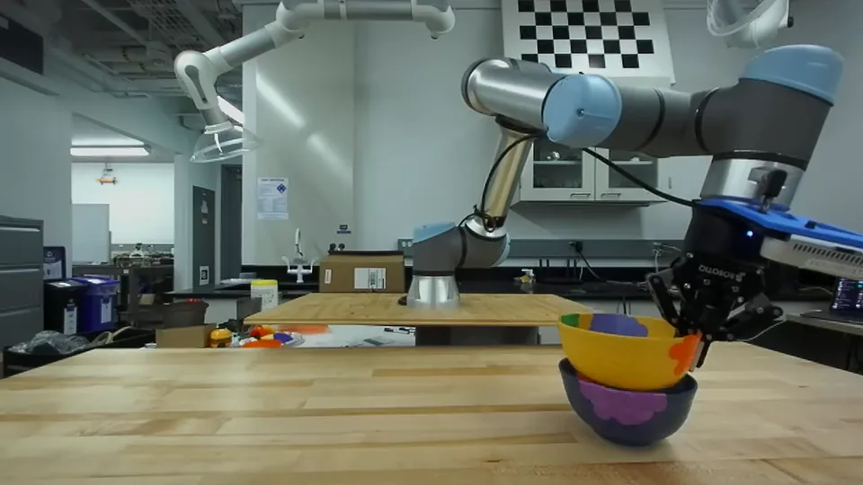
UR5 · Stack trial 7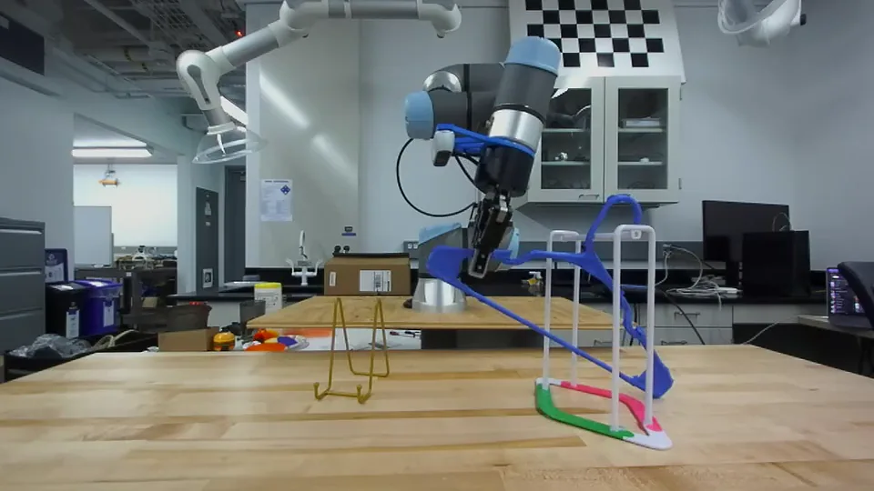
UR5 · Hook trial 6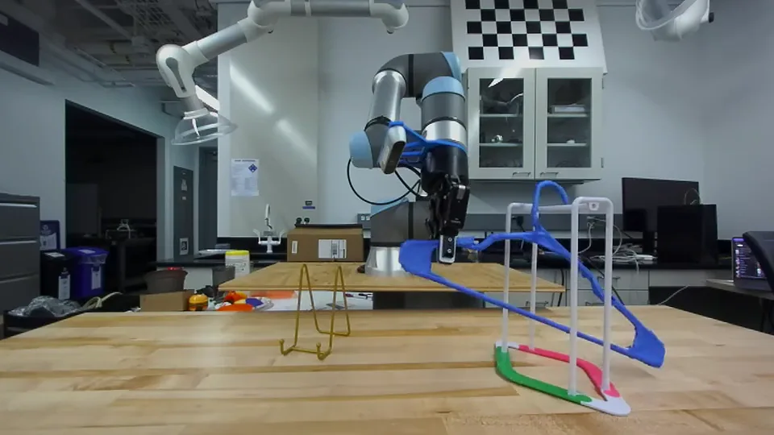
UR5 · Hook trial 7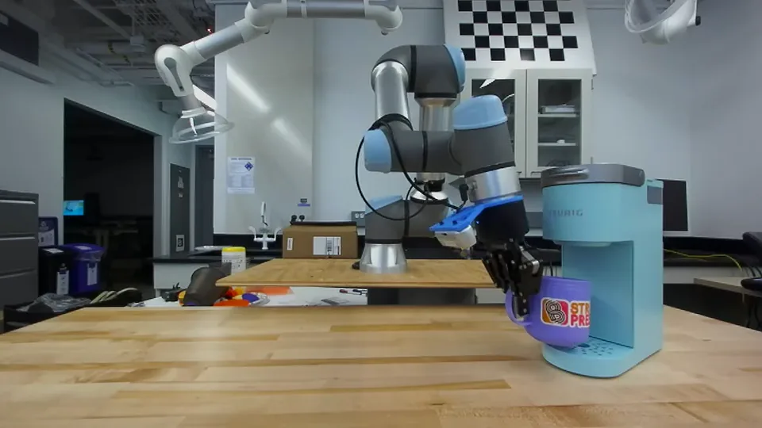
UR5 · Place trial 6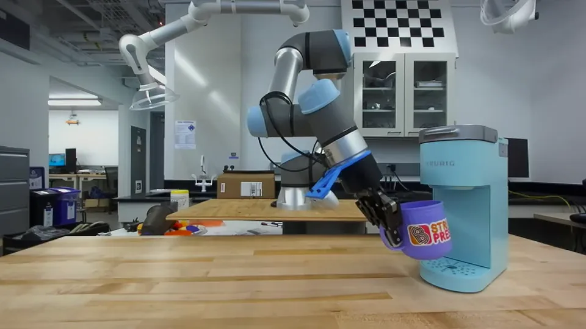
UR5 · Place trial 8
Limitations
PROXY handles two-object tabletop tasks. Scenes with more objects, or settings that are not on a tabletop, would need a richer scene-diversification step.
The generated demonstrations can only be as good as the video generator. Tasks it cannot depict reliably, such as heavy occlusion, deformable objects or fast dynamics, remain hard.
The most natural next steps are multi-object scenes and generalizing across different object instances within a category.
BibTeX
@misc{yao2026proxy,
title = {{PROXY}: Learning Relational Object-Centric Manipulation Policies from a Single {RGB-D} Image},
author = {Yao, Maggie Huili and Chintalapudi, Sahit and Zhang, Tiffany and Anand, Akash and Tippur, Megha and Lozano-P{\'e}rez, Tom{\'a}s and Kaelbling, Leslie Pack and Agarwal, Aditya},
year = {2026},
url = {https://skymanaditya1.github.io/proxy-website/}
}